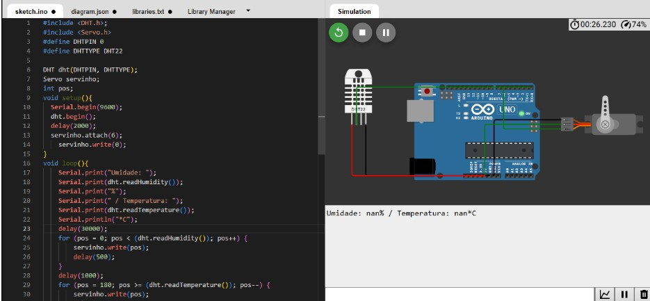

Nesta disciplina, explorei os fundamentos dos Sistemas Ciber-Físicos e da Internet das Coisas, compreendendo como dispositivos físicos podem ser conectados e controlados por meio de redes e serviços em nuvem. Realizei atividades de pesquisa e simulação para entender o funcionamento de módulos microprocessados, comunicação de dados e integração entre hardware e software em aplicações modernas.
Desenvolvimento de protótipos de Arduinos em simuladores virtuais, utilizando sensores de umidade, temperatura e servomotores, explorando na prática conceitos de automação e controle em Sistemas Ciber-Físicos.
